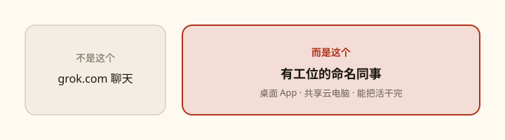

Grok Bot 中文教程
给一位能上班的同事写说明书
Grok Bot 是 xAI / Cursor 的持久命名 AI 同事：每人一个聊天窗口，全体共用一台云电脑，活可以干完再回来找你审批。

你要带走的八件事
- 一个 Bot = 一位有名字的同事：自己的聊天、角色记忆、Routines。
- 所有 Bot 共用 一台 云电脑。文件和登录是共享的，不是安全边界。每个 Bot 有自己的屏幕。
- 私聊 不会 自动同步。上下文靠群聊、转告、共享文件、以及那个 Bot 自己的记忆。
- Skill 是怎么做；Routine 是哪个 Bot + 何时做。先测 Skill，再自动化。
- 任务五件套：Outcome + Sources + Constraints + Deliverable + Review。你决策，Bot 执行。
- 最小编制：一个稳定岗位一个 Bot。只有交接本身需要可见时才建群。
- 发送、发布、删除、购买、改生产，一律放在审批后面。
- 密码、2FA、验证码：接管云电脑自己填，不要贴进普通聊天。
学习路径
按顺序走。前三课让你能下手；中间课讲清楚边界；最后两课是跟做和查阅。
- 01这是什么不是聊天窗口，是能上班的同事6 分钟
- 02安装与登录下载桌面 App，用 Cursor 账号登录8 分钟
- 03第一个 Bot 与五件套指令创建同事，发出第一条像样的任务10 分钟
- 04多个 Bot聊天隔离、共享电脑、群聊、转告8 分钟
- 05创建 / 编辑 / 固定 / 隐藏 / 复制 / 删除 / 分享侧边栏里的全部动作8 分钟
- 06云电脑、连接器、本机执行工位在云端，笔记本只是遥控器10 分钟
- 07Skill 与 Routine把一次做好的活变成可重复流程10 分钟
- 08设置与通知从左下角账号按钮走进设置7 分钟
- 09审批与安全Auto-review、接管、以及不要把 Bot 当隔离墙8 分钟
- 10练习课从第一个真任务到第一个 Routine跟做
- 11FAQ + 一页小抄卡住时先翻这一页查阅
适合谁
第一次打开 Grok Bot 的人
你有合格套餐，想把一件真事交给 Bot，而不是再找一套聊天技巧。
不是什么
不是 grok.com，也不是通用提示词大全
这里只教 Grok Bot 桌面 / iOS 里真实存在的路径。界面若有出入，以你当前版本为准。
怎么打开这份教程
解压后用浏览器打开本目录里的 index.html。全部链接都是相对路径，不需要启动服务器。想发给朋友：把整个 grok-bot-guide 文件夹打成 zip 即可。